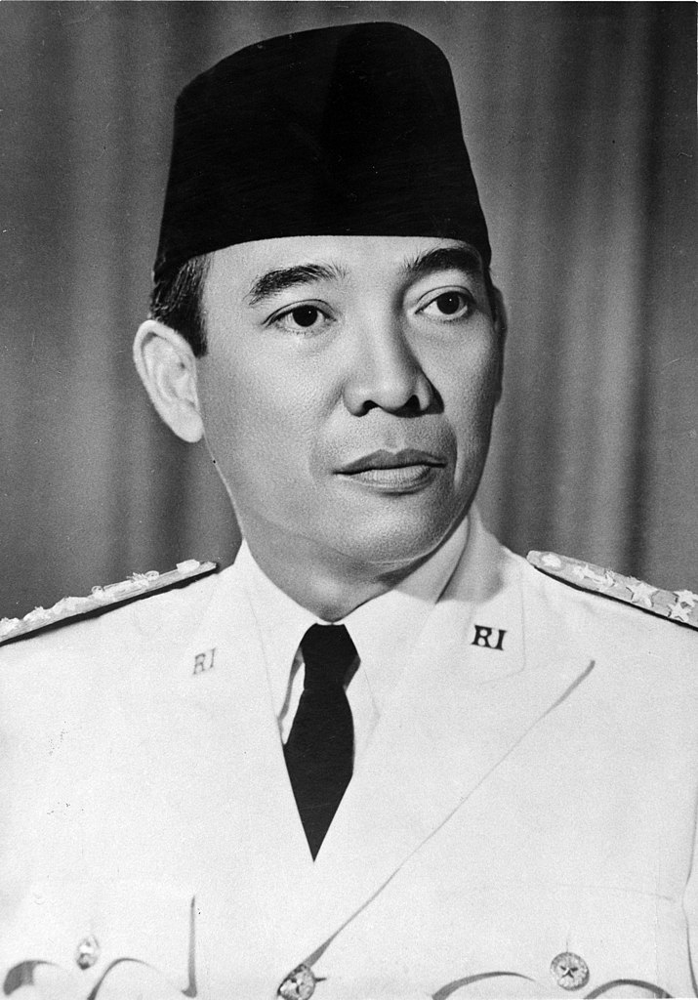

Sejarah Proklamasi Kemerdekaan Indonesia
Pengumuman kemerdekaan pada suatu negara merupakan impian yang dimiliki oleh setiap negara terutama bagi negara dan bangsa yang sudah lama dijajah, seperti Indonesia.
Waktu Indonesia mengumumkan kemerdekaannya pada tanggal 17 Agustus 1945, maka seluruh masyarakat Indonesia sangat senang karena mereka sudah terlalu lama dijajah oleh beberapa negara seperti Belanda dan Jepang.
Bukan hanya senang, tetapi bangsa Indonesia juga mendapatkan semangat kemerdekaan yang tinggi yang dilandasi dengan rasa keberanian untuk mengambil keputusan dan membela kebenaran.
Dengan pengumuman Proklamasi Kemerdekaan Indonesia pada dunia maka Indonesia telah dinyatakan sebagai negara baru yang memiliki kedudukan yang sama dengan negara-negara lain yang sudah melakukan Proklamasi Kemerdekaan. Bagi negara yang belum merdeka maka pengumuman Proklamasi Kemerdekaan pada dunia adalah suatu impian yang sangat didamba-dambakan.
Setiap negara punya sejarah sendiri untuk melakukan Proklamasi Kemerdekaan. Sama halnya negara dan bangsa Indonesia yang di mana sejarah Proklamasi Kemerdekaannya membutuhkan beberapa hal, seperti menggunakan rumah Laksamana Muda Maeda, pemilihan naskah Proklamasi, dan lain-lain.
Namun, sebelum membahas tentang sejarah singkat Proklamasi Kemerdekaan Indonesia, sebaiknya kita kenali dulu apa arti dari “proklamasi kemerdekaan”. Dengan mengetahui “proklamasi kemerdekaan” maka kita bisa merasakan rasa kemerdekaan pada suatu negara. Berikut pengertian “Proklamasi Kemerdekaan”
Pengertian Proklamasi Kemerdekaan
Istilah “Proklamasi” berasal dari bahasa Latin, yaitu proclamare yang memiliki arti berupa pengumuman atau pemberitahuam pada khalayak umum. Pengumuman yang dimaksud ialah pengumuman yang berkaitan dengan hal-hal ketatanegaraan.
Sedangkan “Proklamasi Kemerdekaan” mempunyai arti, yaitu pengumuman kepada seluruh rakyat akan kemerdekaan negaranya. Pengumuman kemerdekaan tersebut bukan hanya ditujukan kepada rakyat yang merasakan kemerdekaan, tetapi juga ditujukan kepada rakyat yang ada di seluruh dunia dan kepada semua bangsa yang ada di dunia.
Dengan Proklamasi Kemerdekaan yang sudah diumumkan dan diberitahukan kepada seluruh warga dunia maka seluruh dunia akan tahu bahwa ada negara baru yang terbebas dari jajahan negara lain. Proklamasi Kemerdekaan yang terjadi pada suatu negara sangatlah berarti bagi bangsanya. Proklamasi Kemerdekaan merupakan sebuah tanda bahwa suatu negara dan bangsa telah mencapai revolusi, mencatatkan sejarah perjuangan, dan yang terpenting adalah terbebas dari cengkraman para penjajah.
Namun, untuk mencapai proklamasi kemerdekaan tersebut perjalanannya tidaklah mudah. Seperti di Indonesia, dimana terdapat berbgai jejak perjuangan nasionalisme dan salah satunya adalah yang terjadi di Surabaya yang dirangkum dalam buku Jejak Nasionalisme – Surabaya Akar Pergerakan Kemerdekaan.

Peristiwa Rengasdengklok
Pada awalnya peristiwa pemboman kota Hirosima dan Nagasaki disembunyikan agar tidak ada yang tahu, tetapi pada akhirnya peristiwa tersebut terdengar sampai ke telinga para pemuda lewat siaran radio BBC di Bandung sehingga membuat mereka segera bergerak dan meminta Proklamasi Kemerdekaan Indonesia segera dikumandangkan.
Para pemuda tersebut di bawah pimpinan Chaerul Saleh melakukan rapat dan rapat tersebut menghasilkan beberapa keputusan, yaitu kemerdekaan adalah hak rakyat Indonesia, Pemutusan hubungan dengan Jepang, dan Ir. Soekarno dan Mohammad Hatta diharapkan untuk segera membacakan Proklamasi Kemerdekaan.
Setelah mendapatkan keputusan dari rapat yang diadakan, kemudian para pemuda tersebut mengirim utusan (Wikana dan Darwis) agar segera bertemu dengan Ir. Soekarno dan Mohammad Hatta untuk menyampaikan hasil rapat tersebut dan meminta Proklamasi Kemerdekaan segera dilaksanakan pada 16 Agustus 1945.
Dengan alasan Jepang masih bersenjata lengkap dan memiliki tugas menjaga status quo maka gagasan para pemuda tersebut ditolak oleh golongan tua sehingga terjadi perbedaan pendapat.
Wikana dan Darwis menyampaikan hasil laporan dari pembicaraan dengan Soekarno dan Mohammad Hatta kepada para pemuda yang sudah berkumpul di Asrama Menteng 31. Para pemuda yang berkumpul terdiri dari Chaerul Saleh, Yusuf Kunto, Surachmat, Johan Nur, Singgih, Mandani, Sutrisno, Sampun, Subadio, Kusnandar, Abdurrahman, dan Dr. Muwardi.
Para pemuda tersebut merasa kecewa setelah mendengar hasil laporan tersebut sehingga membuat suasana rapat menjadi panas. Kemudian para pemuda tersebut membuat gagasan untuk mengamankan Soekarno dan Hatta untuk dengan cara keluar kota yang jauh. Untuk hal ini, para pemuda tersebut menyerahkan tugas ini kepada Syudanco Singgih dan kawan-kawan dari PETA Jakarta.
Sukarni dan Yusuf Kunto mendampingi Syudanco Singgih dalam menjalankan tugasnya. Menurut Singgih, Rengasdengklok merupakan tempat yang tepat dan aman untuk Soekarno dan Hatta. Pada 16 Agustus 1945, Soekarno dan Mohammad Hatta dibawa ke Rengasdengklok. Saat di Rengasdengklok, para pemuda berusaha dengan keras supaya Soekarno dan Mohammad Hatta segera melaksanakan Proklamasi Kemerdekaan.
Awalnya, Soekarno dan Mohammad Hatta tidak ingin melakukan Proklamasi Kemerdekaan. Namun, setelah melakukan perundingan dengan kelompok pemuda dan Ahmad Subardjo.
Akhirnya, Soekarno dan Mohammad Hatta akan memproklamasikan kemerdekaan Indonesia pada tanggal 17 Agustus 1945 di Jakarta. Setelah selesai memproklamasikan kemerdekaan, sore harinya Soekarno dan Mohammad Hatta kembali ke Jakarta bersama Ahmad Subardjo dan Sudiro.